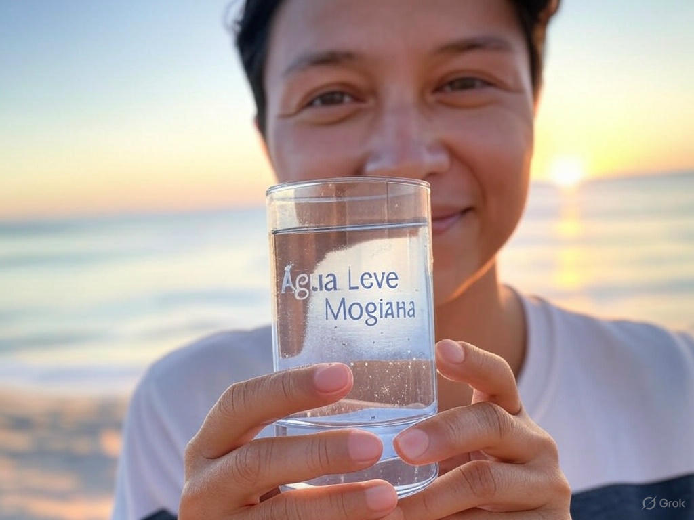
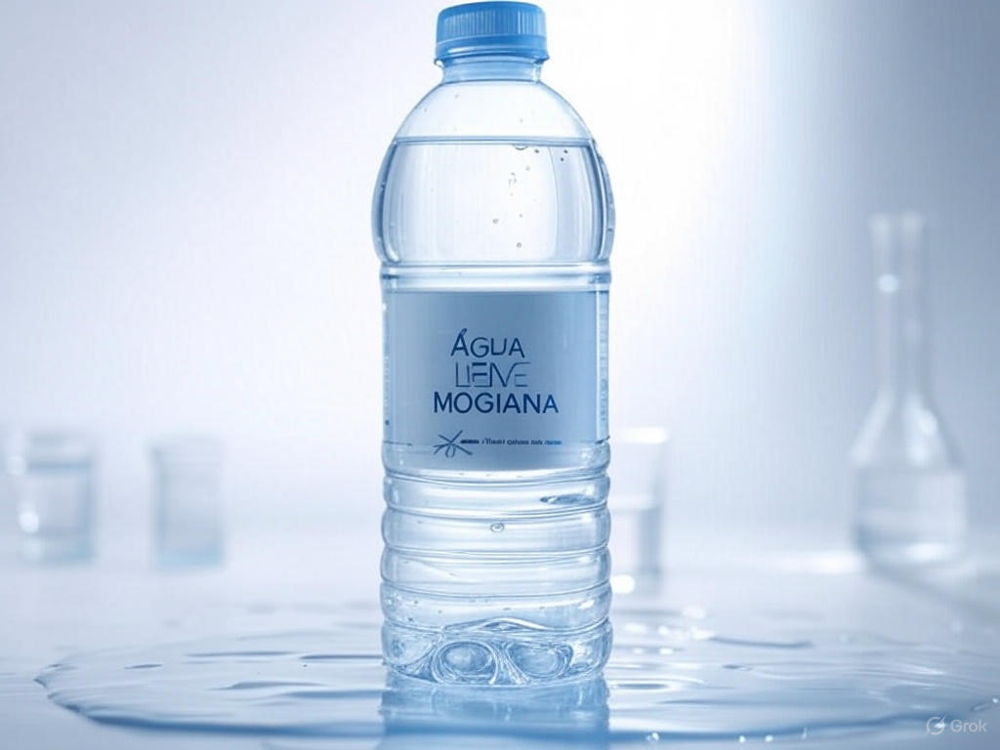

Fique por dentro das novidades, dicas e informações sobre hidratação e sustentabilidade.

A Importância da Hidratação
A hidratação é um pilar essencial para a saúde e o bem-estar. Nosso corpo é composto por cerca de 60% de água, e ela desempenha papéis cruciais, como regular a temperatura corporal, transportar nutrientes e eliminar toxinas. Beber água regularmente, especialmente em dias quentes ou durante atividades físicas, previne a desidratação, que pode causar fadiga, dores de cabeça e até problemas mais graves.
Com a Água Leve Mogiana, você tem a garantia de uma água mineral natural, extraída diretamente da fonte, livre de impurezas e com minerais que fazem bem ao organismo. Experimente incluir pelo menos 2 litros de água no seu dia a dia e sinta a diferença em sua energia e disposição!

Qualidade da Água: O Que Saber
Nem toda água é igual. A qualidade da água que você consome impacta diretamente sua saúde. Para ser considerada segura, ela deve estar livre de contaminações químicas e biológicas, além de possuir um pH equilibrado. A Água Leve Mogiana passa por rigorosos processos de controle para garantir que cada gota seja pura e saudável.
Além disso, nossa água mineral natural contém minerais como cálcio e magnésio, que ajudam no fortalecimento dos ossos e no funcionamento do sistema nervoso. Escolher uma água de qualidade é um investimento na sua saúde a longo prazo.
Embalagens Retornáveis
Os garrafões retornáveis da Água Leve Mogiana são mais do que uma escolha prática – eles refletem nosso compromisso com a sustentabilidade. Feitos para serem reutilizados, esses garrafões reduzem significativamente o descarte de plástico no meio ambiente, ajudando a preservar nossos recursos naturais.
Nossa linha premium, como o garrafão PET Lilás de 20L, combina resistência e design ergonômico com uma proposta ecológica. Ao optar por produtos retornáveis, você contribui para um planeta mais limpo e saudável, sem abrir mão da qualidade da água que chega à sua casa.